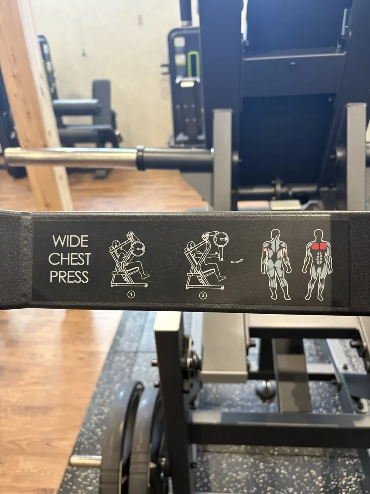

座面の高さ（座ってから確認）
グリップを握って構えたとき、握った手が乳首の高さにあれば正解。目安は「鎖骨と乳首の間〜乳首」の範囲。
・手が鎖骨より上にある → 座面が低すぎ。斜め上に押す形になり肩に効く。座面を上げる
・手が乳首より下にある → 座面が高すぎ。胸の下側と二の腕に逃げる。座面を下げる
合わせたら座面の番号を覚えておく。次回から迷いません。
グリップを握って構えたとき、握った手が乳首の高さにあれば正解。目安は「鎖骨と乳首の間〜乳首」の範囲。
・手が鎖骨より上にある → 座面が低すぎ。斜め上に押す形になり肩に効く。座面を上げる
・手が乳首より下にある → 座面が高すぎ。胸の下側と二の腕に逃げる。座面を下げる
合わせたら座面の番号を覚えておく。次回から迷いません。
- シートに座り、背中を背もたれに完全につける。足は床にしっかり
- グリップは肩幅よりやや広め。肘の真下に手首がくる位置
- 胸を張り、肩甲骨を寄せて固定したまま押す
- 肘は伸ばしきらず手前で止める
- 3秒かけて戻す。胸が伸びる位置まで下ろす
肩甲骨を寄せたまま腕だけ動かす。肩が前に出ると胸ではなく肩に効き、痛めます。
上げ幅 3セットとも12回できたら片側 +2.5〜5kg。必ず左右同じ枚数にします。2026-09-11時点で片側20kgは「10回ギリギリ」なので、まだ上げません。